Participants
Etablissements de formation
- Lycée Jean Monnet / École Nationale du Verre, Yzeure
- Lycée Dorian, Paris
- Lycée Lucas de Nehou, Paris
- Université Jean Monnet, Saint-Etienne
Scientifiques et universitaires
- Daniel Neuville – Institut de Physique du Globe, Paris
- Laurent Cormier – CNRS, Paris Sorbonne
- Nadia Pellerin – CNRS, Orléans
- Yann Gueguen – Institut de Physique, Rennes
- Wilfried Blanc – Institut de Physique, Nice
- Ronan Lebullenger – Université de Rennes
- Claire Azema – Université de Bordeaux
Archéologues
- Françoise Labaune-Jean – INRAP, Rennes
Artistes verriers
- Yves Braun
- Roselyne Blanc-Bessière
- Jonathan Ausseresse
- Antoine Rault
Artisan verrier
- Allain Guillot, Meilleur ouvrier de France
Cristalleries
- Baccarat
- Saint-Louis
Association
- Association Française des Souffleurs de Verre du CNRS, des Universités et de la Fonction Publique
- Union pour la Science et de la Technologie Verrières
Les conférences
Chaque jour, les participants ont assisté à deux conférences. Le programme a exploré le verre à travers son histoire et sa composition aux applications modernes et au recyclage.
- Jour 1 : Histoire du verre et des principaux composants
- Jour 2: Structure du verre et couleurs
- Jour 3: Propriétés mécaniques du verre
- Jour 4: Design, art et artisanaat
- Jour 5: Usages actuels, cycle de vie et recyclage
Quatre artistes verriers ont également présenté leur approche artistique et leur travail en lien avec les thèmes de la conférence.
Télécharger le programme PDFLes présentations données lors de la conférence sont disponibles sur le site web de l’USTV : USTV .
Les Ateliers
Les ateliers ont été conçus comme des sessions pratiques et interactives réunissant étudiants, enseignants, chercheurs et professionnels du verre. Ils ont offert une opportunité aux participants d'échanger des connaissances, de partager des expériences et de découvrir le verre sous des aspects techniques et scientifiques.
Les étudiants des formations verrières étaient au cœur de ces échanges. Ils ont travaillé aux côtés d’artistes, d’artisans et de scientifiques, en associant les techniques professionnelles de fabrication du verre à une compréhension approfondie de ses propriétés physico-chimiques.
Les ateliers ont été organisés autour de deux grands thèmes :
1. Techniques de verre chaud et froid
Les participants ont découvert des procédés professionnels de fabrication du verre à travers des activités pratiques, associant l’apprentissage technique à des échanges entre étudiants, professionnels du verre et chercheurs.
Atelier de verre chaud
Cueillage du verre, étirage, gouttes du Prince Rupert et expériences de verre flotté/Bomma..
Dirigé par F. Capet, A. Mexmain and D. Marcade
Atelier de travail du verre au chalumeau
Introduction à la forme et à la transformation du verre en utilisant un chalumeau.
Dirigé par B. Darrieutort
Atelier de fusing
Assemblage du verre, recuisson, dévitrification et procédés de trempe.
Dirigé par J. Bloux and Y. Gueguen
Atelier de verre teinté
Coupe, assemblage, peinture en grisaille et techniques de décoration du verre.
Dirigé par S. Denizard, A. Regue and J. Kellog
Atelier de décoration du verre
Techniques de mise en forme, de découpe, de sablage, de bouchardage, de meulage et de polissage.
Dirigé par G. Gatell, L. Regnault and C. Nika
2. Chimie physique du verre
A travers des expériences et des démonstrations, les étudiants ont exploré les principes scientifiques qui régissent les propriétés du verre, incluant la couleur, la structure, le comportement optique et la fusion.
Atelier de colorimétrie
Nadia Pellerin
Atelier du spectre optique des verres
Gérald Lelong
Atelier de coloration du verre: expériences de fusion
Laurent Cormier
Atelier d'étude de la structure du verre à l'aide de la spectroscopie Raman
Daniel Neuville
Atelier d'observation des processus de fusion du verre
Adrien Donatini
Atelier de fabrication du verre en utilisant un four micro-ondes
Ronan Lebullenger
Ces ateliers ont créé un dialogue unique entre étudiants, chercheurs, enseignants et professionnels du verre. En associant expériences pratiques, recherche scientifique et approches artistiques, ils ont permis aux participants de découvrir le verre comme un matériau d’innovation et un vecteur de créativité.
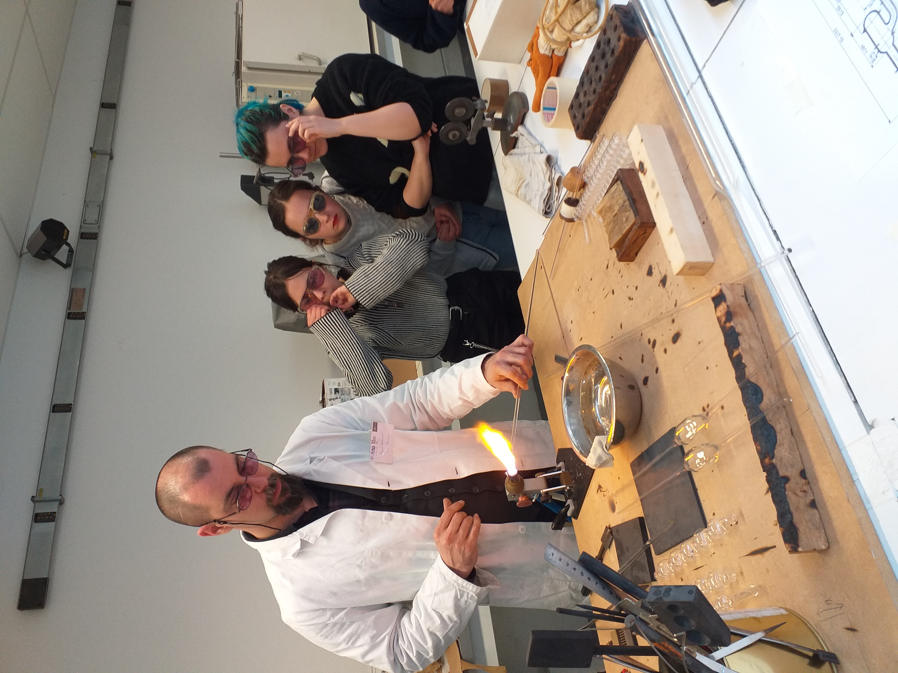

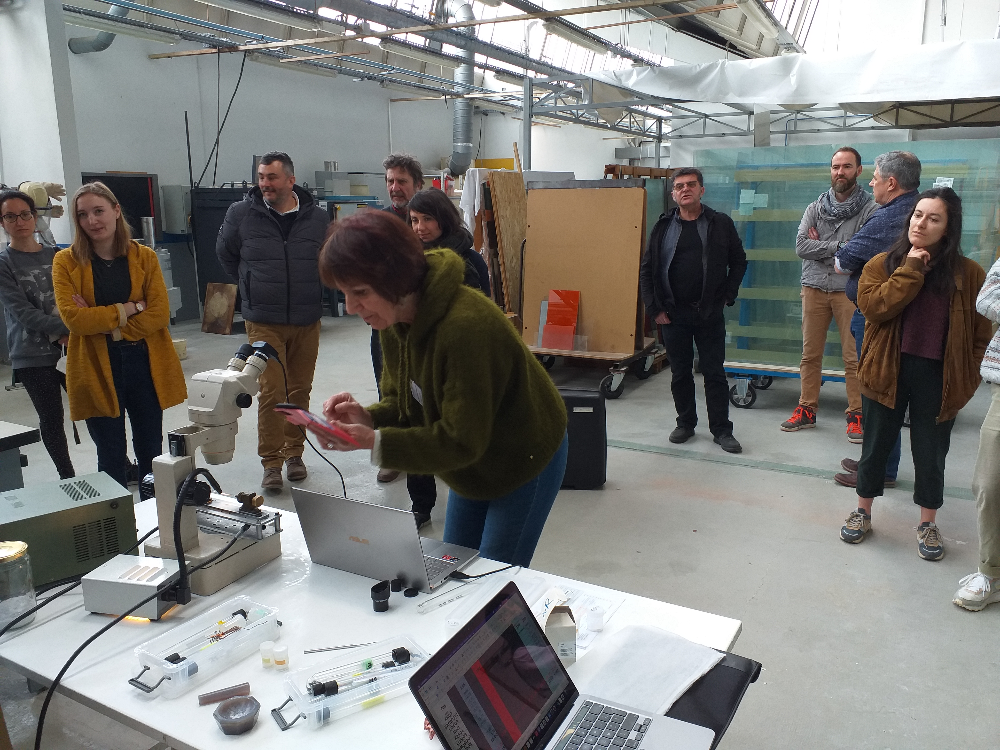
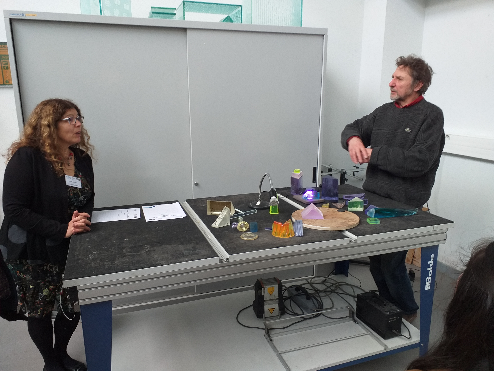
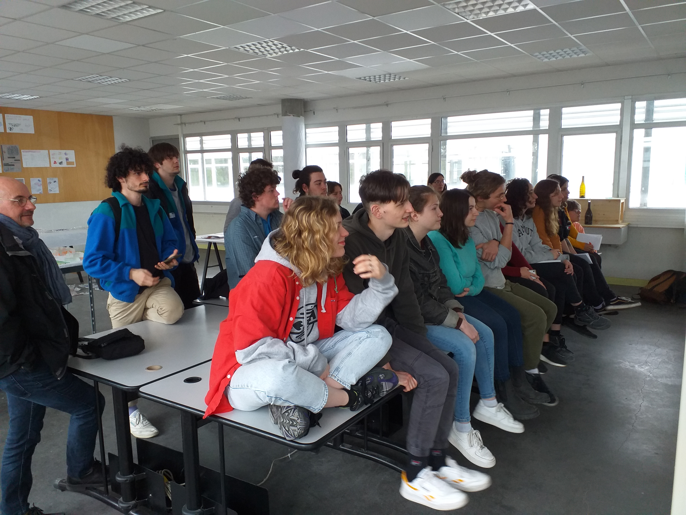
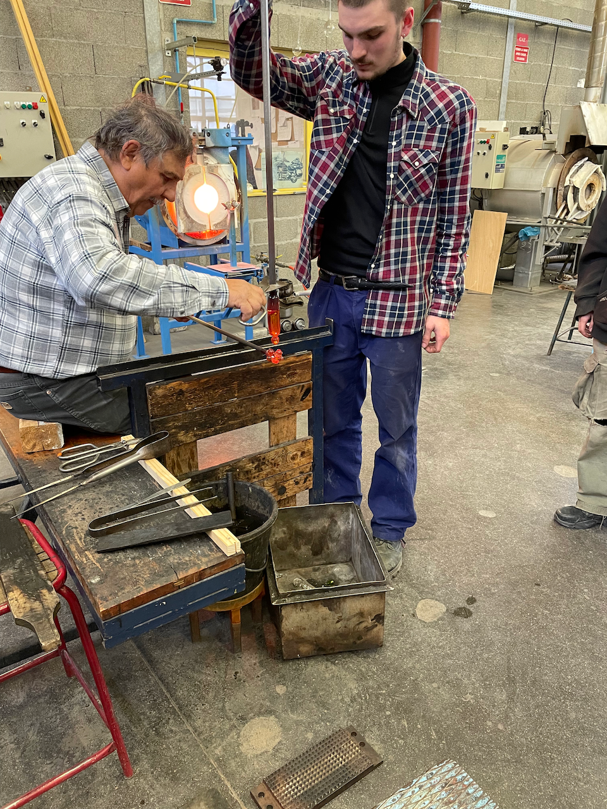
Exposition d’œuvres d’artistes verriers
Quatre artistes verriers : Roselyne lanc-Bessière, Yves braun, Antoine Rault and Jonathan Ausseresse ont présenté leurs œuvres à l’espace d’exposition EROA du Lycée Jean Monnet.
L’exposition a été installée à côté des créations réalisées par les élèves de l’école du 01 au 08 avril 2022.
L'exposition publique a été inaugurée le mardi 05 avril par le Recteur de l’Académie de Clermont-Ferrand et Jérôme De Lavergnolle, Président de la Fédération du Verre et du Cristal.
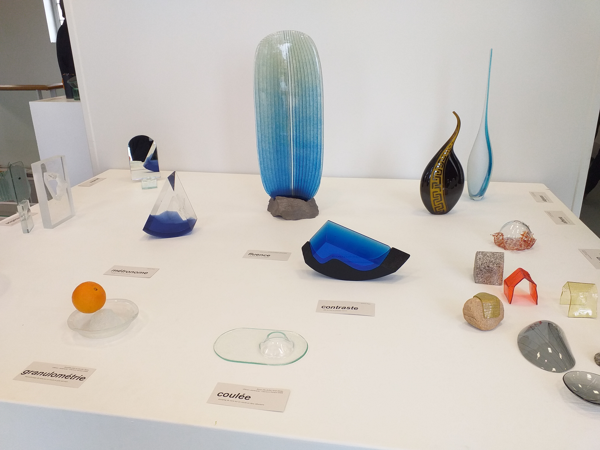

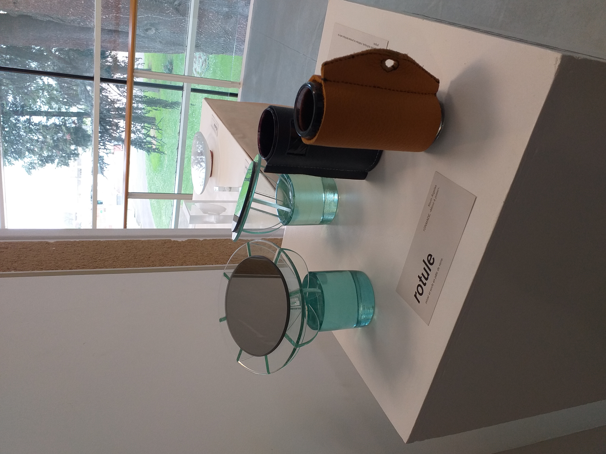
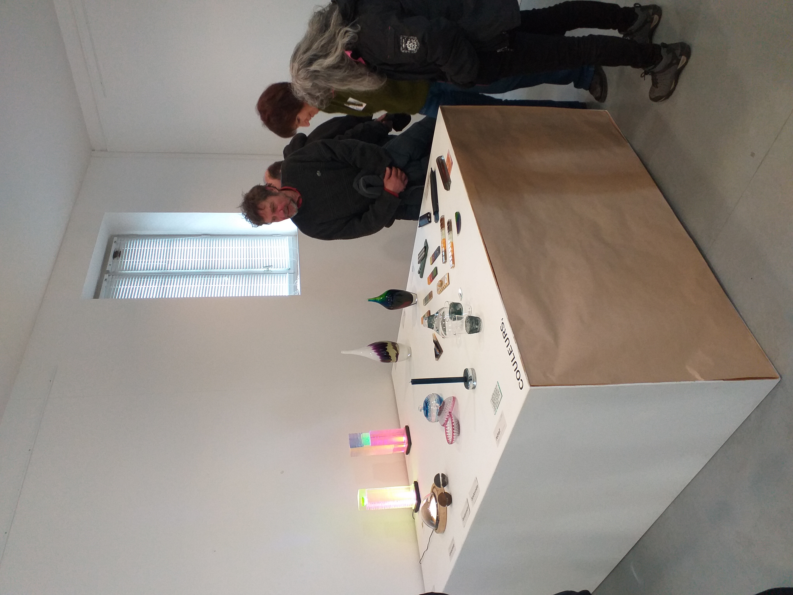
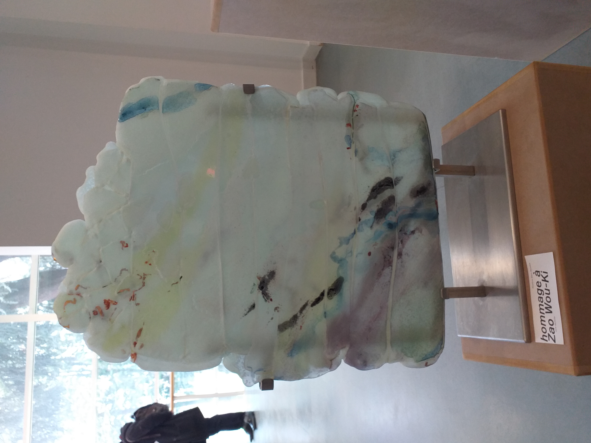
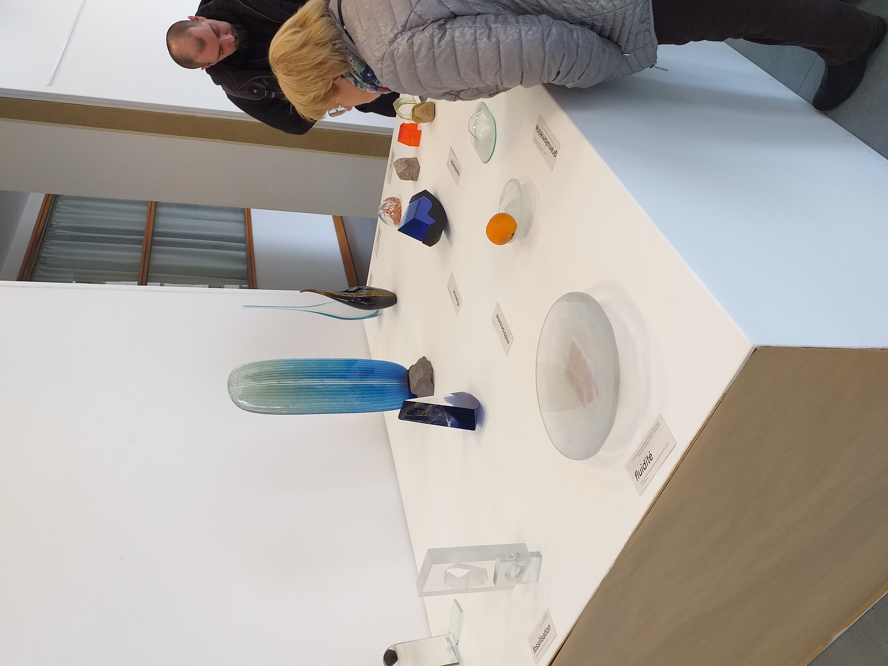
Partenaires
- Fédération du Verre et du Cristal
- Fédération des Industries du Verre
- Fédération Française des Professionnels du Verre
- Union pour la Science et la Technologie Verrières
- Moulins Communauté
- Université Jean Monnet Saint-Etienne
- ROTARY Moulins
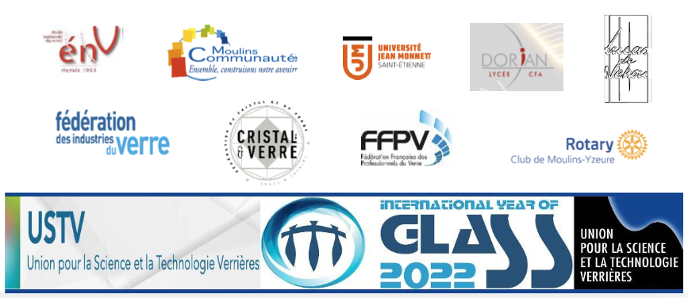